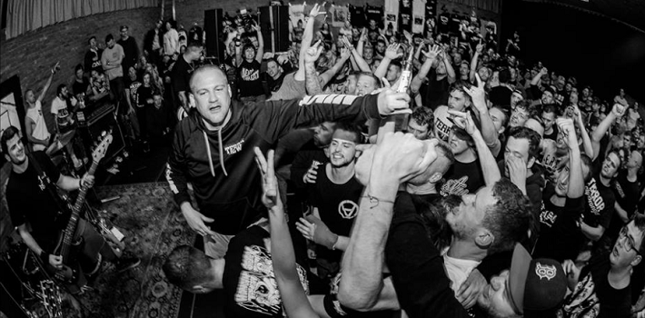

Terror
Biografía
Su segundo álbum One With The Underdogs, vendió más de 40.000 copias. También han estado en giras por Europa (incluida Rusia), Australia, Nueva Zelandia, Corea, Japón, México y América del Sur. Su tercer álbum Always The Hard Way, alcanzó el puesto #10 en el ranking de Billboard y el #19 en los mejores discos independientes de la misma.
Antes de Terror, su vocalista Scott Vogel, ya era popular entre la escena underground, cantando a mediados de los años 90 en bandas como Slugest, Despair y Buried Alive. El baterista Nick Jett y ex guitarrista Todd Jons, eran miembros de la conocida banda de hardcore Carry On (que fueron lanzados por Bridge Nine and Youngblood Record). El ex bajista de Terror, Carl Schwart, grabó la mayor parte de Always The Hard Way, y después renunció para liderar su actual banda, First Blood.
Vogel ha sido una figura clave en la supervivencia de la escena, después de haber renunciado a una vida normal en el hogar para aporrearse en el camino, a pesar de fracturas en las extremidades, hernias discales y todo lo que ello conlleva un show de Terror.
Ellos simplemente están dispuestos a tocar para quienes quieren escuchar, compartiendo el escenario con una variada lista de bandas que van desde As I Lay Dying hasta Agnostic Front.
Más...
Veteranos de hardcore, Terror, unido a la lista de expedientes de la victoria con una explosión, liberando vivir por el código en abril de 2013. Las letras, con diseño amplio del álbum presentado a aficionados a la música en todo el mundo lo que significa realmente vivir tu vida por "los códigos" de hardcore. Apoyo a la comunidad de género, pegado a sus raíces y entregar la verdad - estos y mucho más ilustran lo que significa estar en la familia hardcore.
Durante siglos que hemos vivido sin miedo a la repercusión, como nuestra avaricia y depravación nos ha llevado a nuestro colapso. Hemos perdido toda compasión por nuestro prójimo y abusado de todo a la vista. 25 hora está al caer. Terror se formó en 2002 como una reacción directa a lo que estaba ocurriendo en la escena musical underground que se llama Inicio. Disgustado con lo que se presentó pasado como hardcore e intentaban recuperar el género del mundo tocando la música que había originado; en él está la forma más cruda, honesta y enojado. Inmediatamente, hubo una conexión con personas de ideas afines en todo el mundo y la banda continuamente el juego muestra todo el mundo.
Terror comenzó como una idea, pero rápidamente se convirtió en una cruzada. Terror capturó la ferocidad que el género había estado desaparecido, y con su increíble ética de trabajo y enfoque nihilista a recorrer, se convirtieron en los portadores de bandera hardcore de esta generación. Pasado pocos álbumes creadas movimientos de terror inmediatamente después de su liberación.
Los títulos Resumen el clima actual de la música hardcore y sirvieron como un grito de manifestación de todos sus creyentes. Su nuevo álbum sigue este mismo palo. La encarnación actual de la banda, que cuenta con la formación titular más largo de su historia, montado el otoño pasado con una intención: actuar desafiantemente en "The 25th Hour". Si esto es realmente nuestro clímax potencial, todo sería despojado y nos volvería a nuestra forma más básica.
Terror consciente mímico esta urgencia y volvió a sus raíces en su nueva versión. Actuaban sin un productor y acumulativamente hechos a la hora 25 juntos. Si fue demasiado largo, fue cortado abajo. Si es demasiado lento, se acelera.
Si no tenía nada que decir, fue lanzado lejos. Cada canción se manifestó deliberadamente para exudar la desesperación, la inmediatez y la pasión de los inicios de la banda. Una vez grabada, el álbum entonces fue mezclado por Tom Soares, quienes habían o mezcla de hardcore de artistas influyentes como juez, margen de maniobra, las Cro Mags, Agnostic Front, enfermo de todo y Killing Time. Esto puso los toques finales de la críticos en la última declaración musical de Terror. Con el disco ya terminado, Terror pasará a lo que hacen mejor - tocando en vivo. Planea continuar con su legado de 13 años de diezmar todas las etapas que vienen en contacto con y difundir su verdad a todos los rincones del mundo.